快要到26美亚杯的比赛了，临时突击一下知识点
1. 【单选题】（1分） 香港警方接到报案，西贡区布袋澳有人持木棍袭击他人，警方到达现场发现冯子超头部受伤昏迷，身上只有一部智能手机但没有身份证明文件。调查后香港警方以伤人罪拘捕了陈民浩。陈民浩被捕后保持沉默，拒绝交代案情，身上搜获一部智能手机，冯子超则被送往医院救治。警方检查了两人的智能手机，并由检验人员进行了检验。冯子超的智能手机资料储存在FUNG_CC_mobile.zip文件中，而陈民浩的智能手机资料则储存在CHAN_MH.zip文件中。警方希望运用你的电子数据检验知识，在两个人的智能手机中查找办案线索。请你使用CHAN_MH.zip检材回答以下问题 这个智能手机是什么操作系统?
- A. iOS 17.1.1
- B. iOS 17.2.1
- C. iOS 17.3.1
- D. iOS 17.0.1
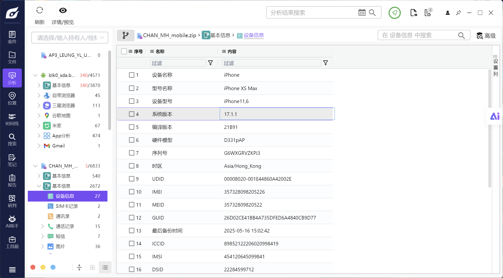
A
2. 【填空题】（1分） 在这个手机中，有多少组国际移动设备识别码(IMEI)号码? (请以阿拉伯数字作答)
在iDevice_info.txt记录了两个IMEI
357328098205226和357328099153748
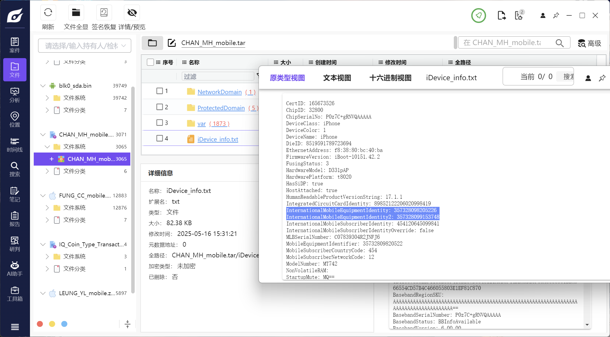
2
3. 【单选题】（1分） 承上题，以下哪一个才是正确的国际移动设备识别码(IMEI)号码?
- A. 357328098205226
- B. 357328097205226
- C. 357328096205226
- D. 357328095205226
为什么会有两个imei值?
IMEI全称是InternationalMobileEquipmentIdentity
因为对于双卡双待手机，每个SIM卡槽都可以插入SIM卡，网络会将其视为两个独立的设备。因此，每个卡槽都需要一个IMEI号与对应的SIM卡（IMSI）
这种设计保证了：
- 运营商识别：网络可以区分哪张SIM卡在使用哪台设备，防止混淆。
- 安全性：如果两个SIM卡共用一个IMEI，可能在某些国家（如印度）被视为不合法，导致网络接入问题
- 功能管理：用户可以分别管理两张卡的数据和通话，例如一张用于数据、一张用于通话，或在不同国家使用不同运营商的SIM卡
那么从做题场景的角度出发，我们可以在iDevice_info.txt和Info.plist两个文件中都找到imei值，而357328098205226出现了两次，那么应该就是它了
md最后发现选项根本不需要考虑这个点，唉，还是吃了新人的亏
357328098205226
4. 【单选题】（1分） 请指出最后使用的使用者身分模组(SIM)的集成电路卡识别码(ICCID)
- A. 89852122206020998419
- B. 89852122205020998419
- C. 89852122204020998419
- D. 89852122203020998419
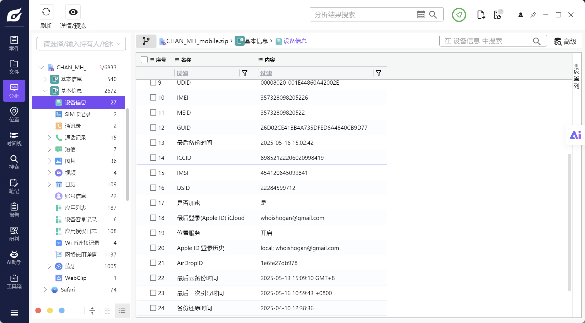
A
5. 【填空题】（1分） 请指出最后使用的Apple ID是多少？ (请依照参赛材料中的原文作答，注意区分大小写、空格及符号)
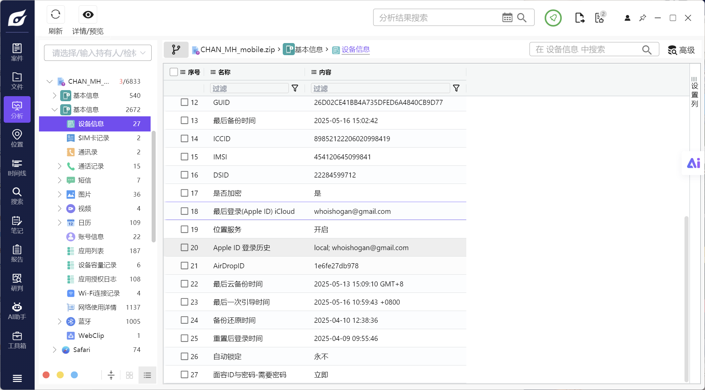
whoishogan@gmail.com
6. 【填空题】（1分） 蓝牙模组中的蓝牙地址是多少？ (请以下格式作答:xx:xx:xx:xx:xx:xx)
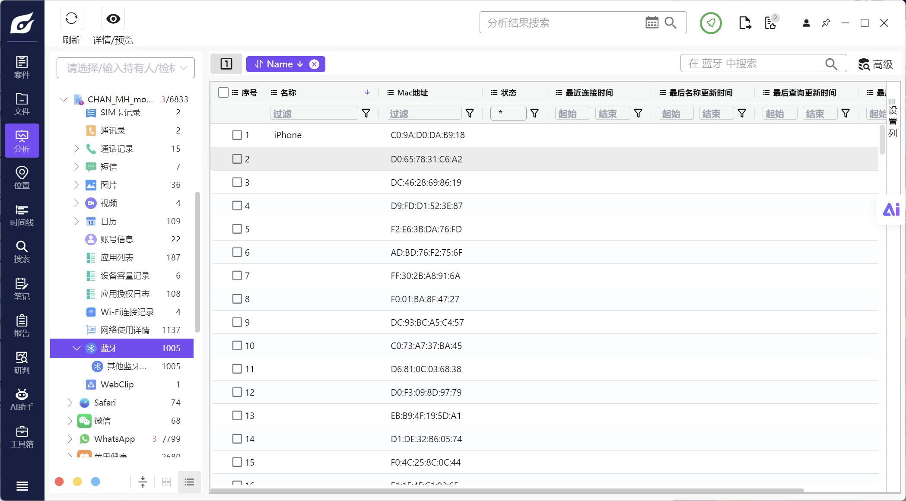
C0:9A:D0:DA:B9:18
7. 【填空题】（1分） 这个智能手机曾经启动「个人热点」分享网络，请问他的「热点」名称？ (请依照参赛材料中的原文作答，注意区分大小写、空格及符号)
又是一个知识盲区
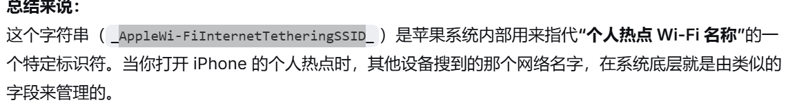
知道了这点之后还是很好找到的
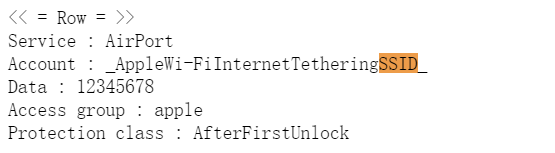
12345678
8. 【单选题】（1分） 这个智能手机没有连接过以下哪一个服务集标识符(SSID)
- A. Hongn Home
- B. CMHK
- C. 1010 free wifi
- D. ErrorError
CD选项都可以在火眼里面找到
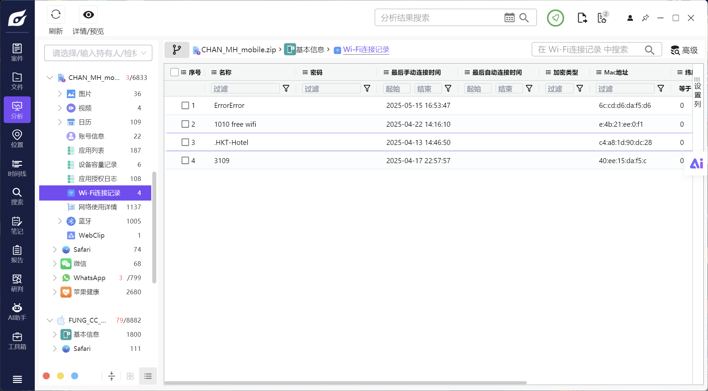
至于B嘛，有点无语，信息差说是，那就补充一下
中国移动通信-----chinamobile CMCC
中国联通通讯-----chinaunicom CUCC
中国电信 ------CHINATELECOM CTCC
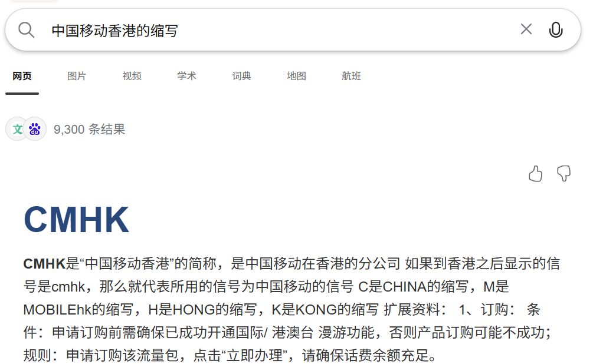
所以选A
9. 【填空题】（1分） 请指出首次连接服务集识别码(SSID)名称为" CMHK"的无线区域网络(Wi-Fi)的日期及时间 (请以GMT +8时区及以下格式作答: yyyy-MM-dd HH:mm:ss)
找不到
10. 【单选题】（1分） 安装了以下即时哪个通讯软件? i) WhatsApp ii) WeChat iii) WhatsApp Business iv) QQ
- A. 只有 i) 和 ii)
- B. 只有 i), ii) 和 iii)
- C. 只有 i), ii) 和 iv)
- D. 以上皆是
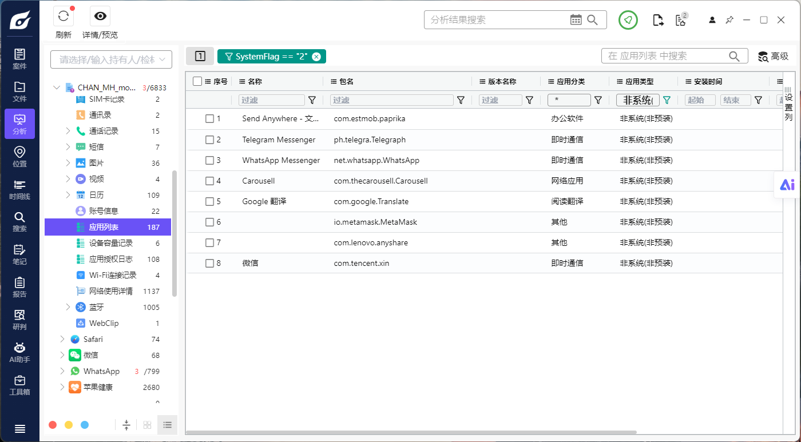
A
11. 【填空题】（1分） 承上题，请指出即时通讯软件"WhatsApp"的版本 (请依照参赛材料中的原文作答，注意区分大小写、空格及符号)
在mobile.tar/var/mobile/Applications/group.net.whatsapp.WhatsApp.shared/Library/Preferences/group.net.whatsapp.WhatsApp.shared.plist中可以找到
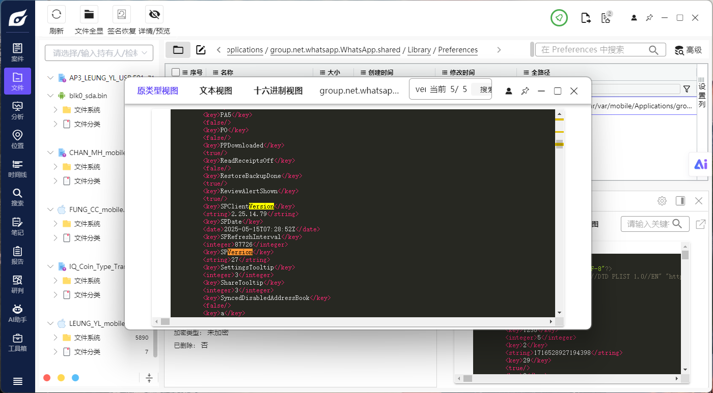
2.25.14.79
12. 【单选题】（2分） 陈民浩的手机中，总共安装3个文件传输软件，封包名称分别为com.apple.Sharing.AirDropUI、com.lenovo.anyshare、com.estmob.paprika，其中有哪一个软件曾经用来传送/接收文件功能?
- A. com.apple.Sharing.AirDropUI
- B. com.lenovo.anyshare
- C. com.estmob.paprika
检索发现只有C项有传输文件
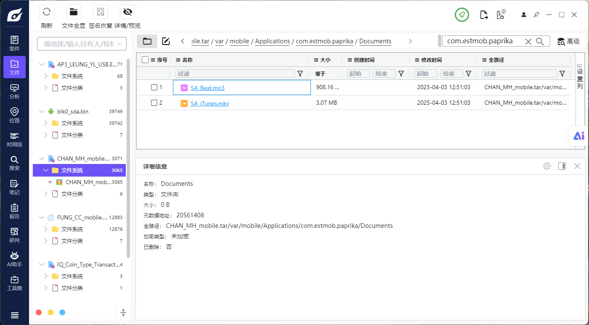
C
13. 【填空题】（2分） 承上题，与其有传送/接收过资料装置的装置ID是多少? (请依照参赛材料中的原文作答，注意区分大小写、空格及符号)
14. 【填空题】（2分） 承上题，这个装置名称是? (请依照参赛材料中的原文作答，注意区分大小写、空格及符号)
15. 【填空题】（2分） 承上题，本机装置的装置ID是多少? (请依照参赛材料中的原文作答，注意区分大小写、空格及符号)
直接检索device就行
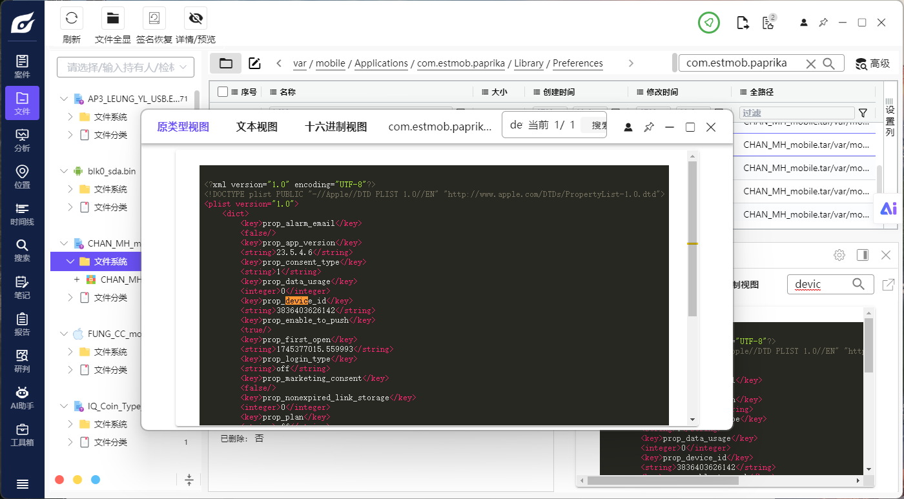
3836403626142
16. 【单选题】（2分） 承上题，陈民浩的手机(CHAN_MH_mobile.zip)是传送方或是接收方?
- A. 传送方
- B. 接收方
- C. 传送及接收方
17. 【单选题】（2分） 根据传送档案的名称，判断是以下哪一类型? (单选)
- A. 屏幕截图
- B. 手机拍摄影片
- C. PDF文件
- D. zip压缩文件
18. 【单选题】（2分） 承上题，接收至哪一个装置?
- A. CHAN_MH_mobile.zip
- B. blk0_sda.bin
- C. FUNG_CC_mobile.zip
- D. LAM_KH_Mobile.zip
- E. WONG_CW_mobile.zip
19. 【单选题】（2分） 承上题，传送方是通过此文档传输软件的哪个模式作出传送?
- A. SEND_PARTIALLY
- B. SEND_PAPRIKA
- C. SEND_DIRECTLY
- D. SEND_BYCLOUD
- E. SEND_BLUETOOTH
20. 【多选题】（2分） 从来没有安装以下哪个网络浏览器？
- A. Safari
- B. Chrome
- C. Firefox
- D. edge
一个一个检索就行了，发现只有Safari
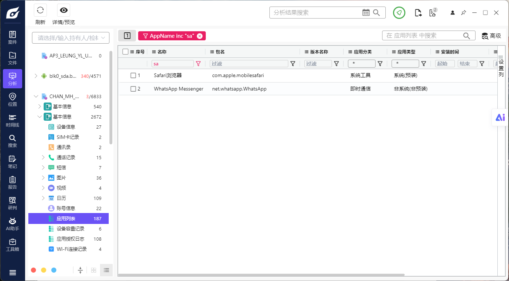
BCD
21. 【填空题】（2分） 承上题，网络浏览器Safari有多少个书签(Bookmark)记录？ (请以阿拉伯数字作答)
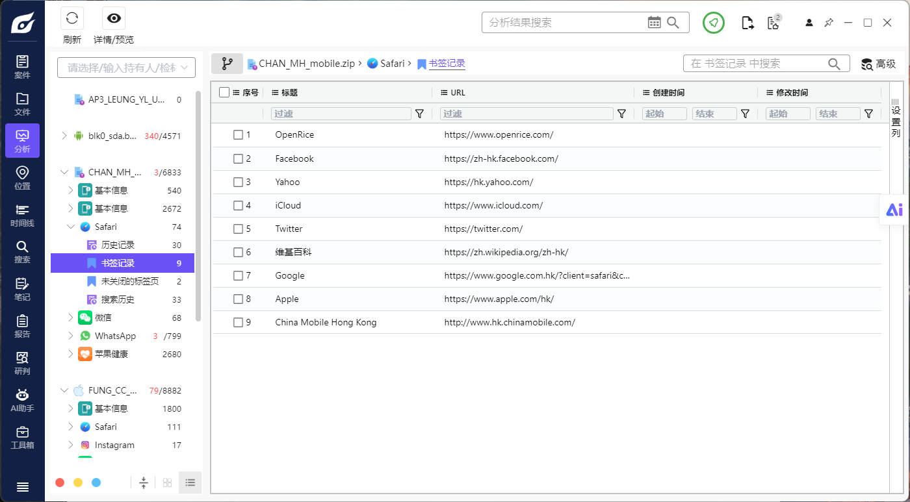
9
22. 【多选题】（2分） 承上题，曾经通过Safari浏览器用下列哪一个字词进行过搜索?
- A. 非法处理尸体最高刑罚
- B. escape room hong kong
- C. cypto wallet
- D. 非法处理尸体
检索
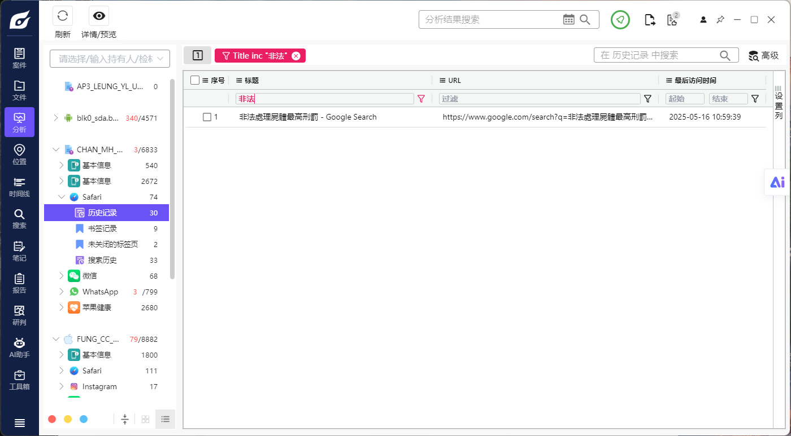
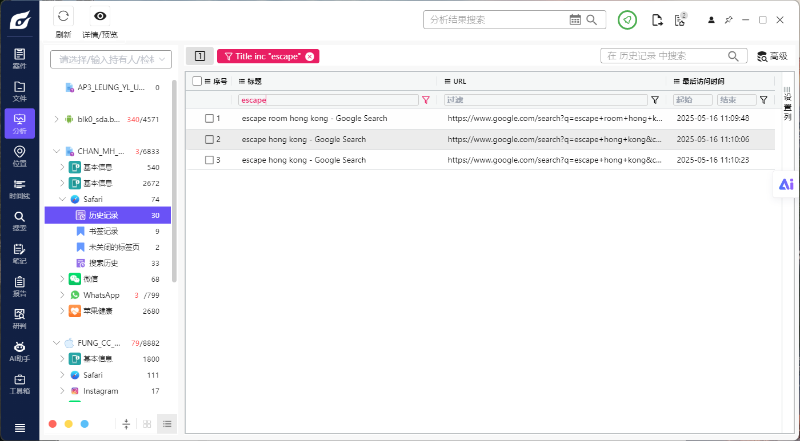
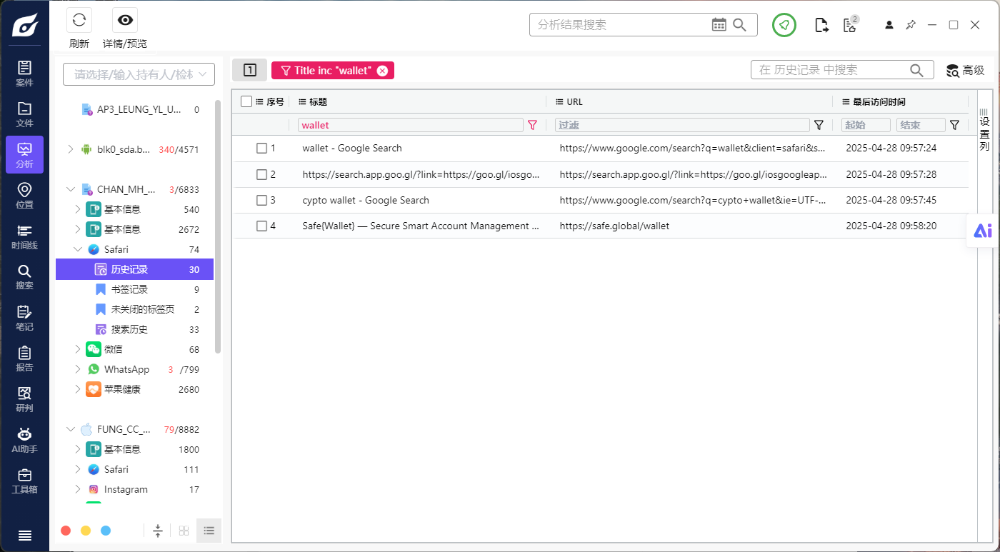
ABC
23. 【填空题】（1分） 有多少个图片文件曾经储存到iCloud? (请以阿拉伯数字作答)
在var/mobile/Library/Mobile Documents/com~apple~CloudDocs路径下
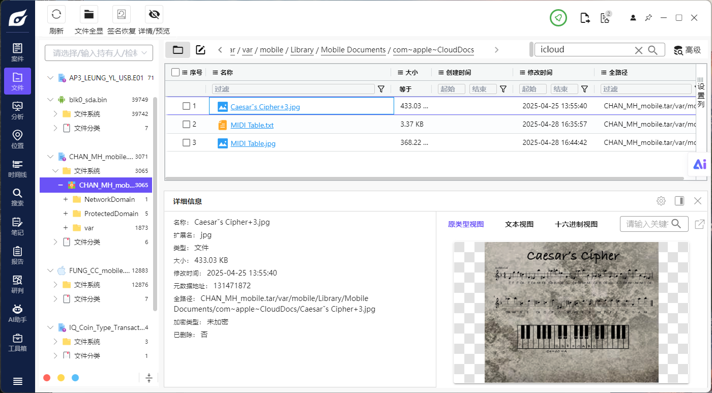
2
24. 【填空题】（1分） 相册中有多少张图片是通过屏幕截图功能取得？ (请以阿拉伯数字作答)
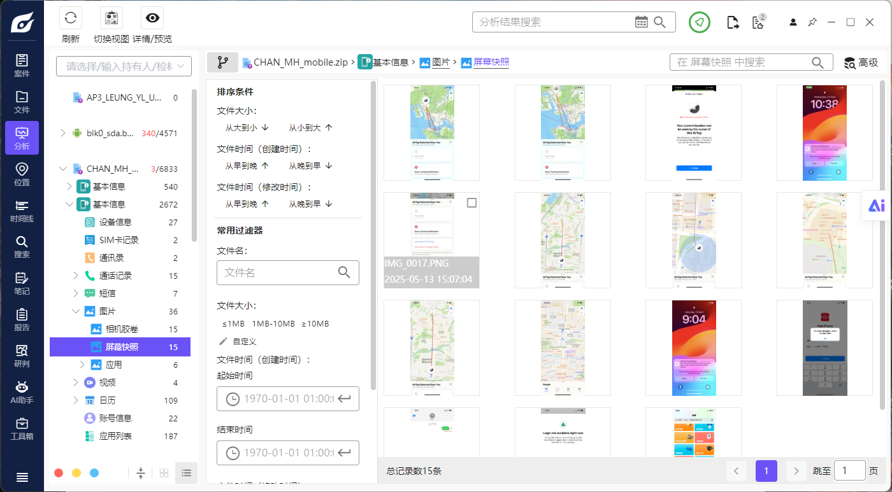
15
25. 【填空题】（1分） 请参考参赛材料FUNG_CC_mobile.zip回答以下问题 这部智能手机连接过多少个 Wi-Fi 网络？ (请以阿拉伯数字作答)
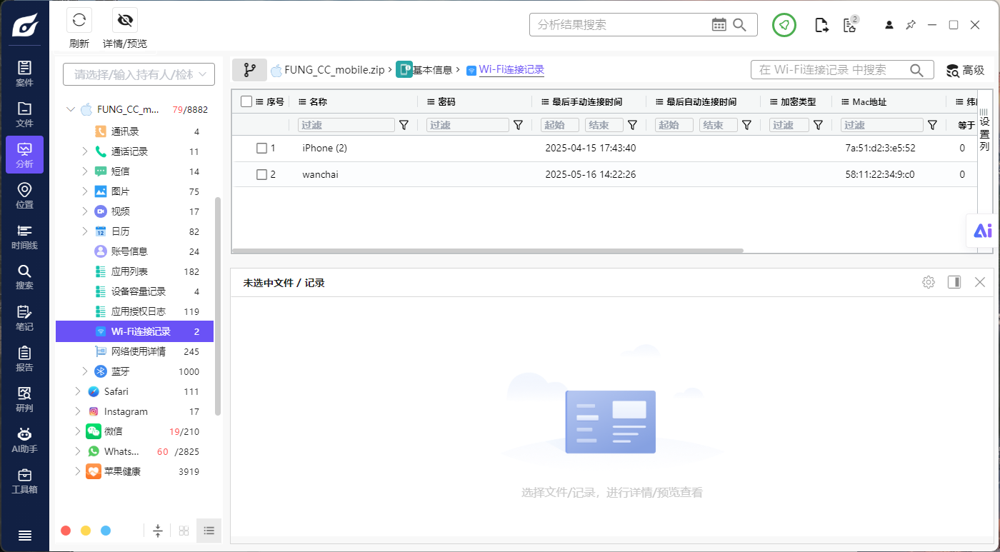
2
26. 【单选题】（2分） 这部智能手机曾经连接过以下哪个无线网络？ i) THREE_WIFI ii) wanchai iii)iPhone(2) iv) Router
- A. 只有 i)
- B. 只有 ii) 和 iii)
- C. 只有 ii), iii) 和 iv)
- D. 以上皆是
见上题
B
27. 【填空题】（2分） 这部手提手机最早连接(非热点)Wi-Fi的时间是什么？ (请以GMT +8时区及以下格式作答: yyyy-MM-dd HH:mm:ss)
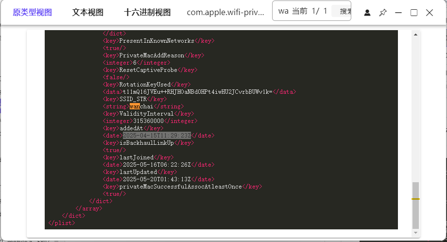
2025-04-15 19:29:23
28. 【填空题】（2分） 承上题，请列出这个连接的服务集识别码(SSID)? (请依照参赛材料中的原文作答，注意区分大小写、空格及符号)
就是wifi名称而已
wanchai
29. 【填空题】（2分） 承上题，请列出这个连接的登入金钥? (请依照参赛材料中的原文作答，注意区分大小写、空格及符号)
Airport在iPhone中代表无线网络
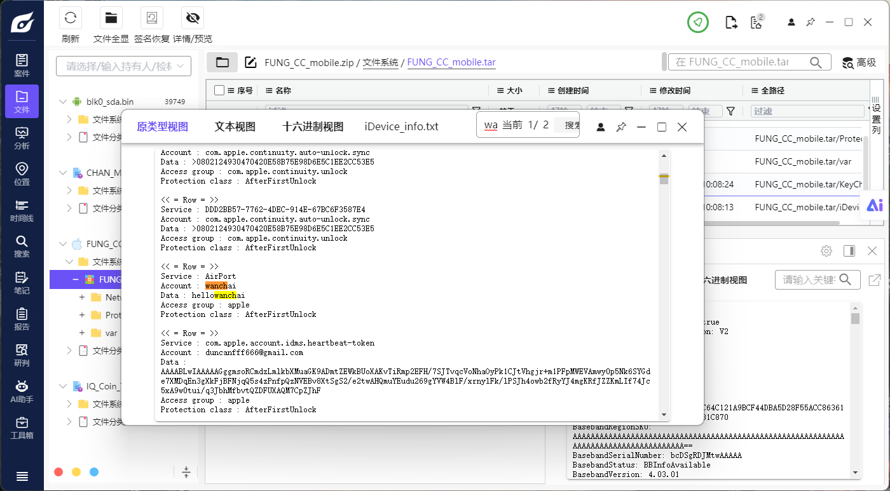
hellowanchai
30. 【单选题】（2分） 相册中有两张图像互换格式图片(gif)「IMG_0057.GIF」及「IMG_0062.GIF」，请指出由哪一个软件拍摄?
- A. Infltr
- B. Discreet
- C. Meitu
- D. Prisma
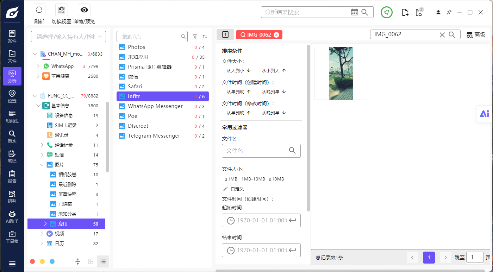
A
31. 【单选题】（2分） 曾经以空投(AirDrop)方式成功传送了文件到另外一个装置，以下哪一个陈述是正确的？
- A. 传送了一个图片文件
- B. 传送了两个图片文件
- C. 传送了一个图片文件及一个文件
- D. 传送了一个图片文件及两个文件
先检索一下这个airdrop，发现有这么几个数据库文件
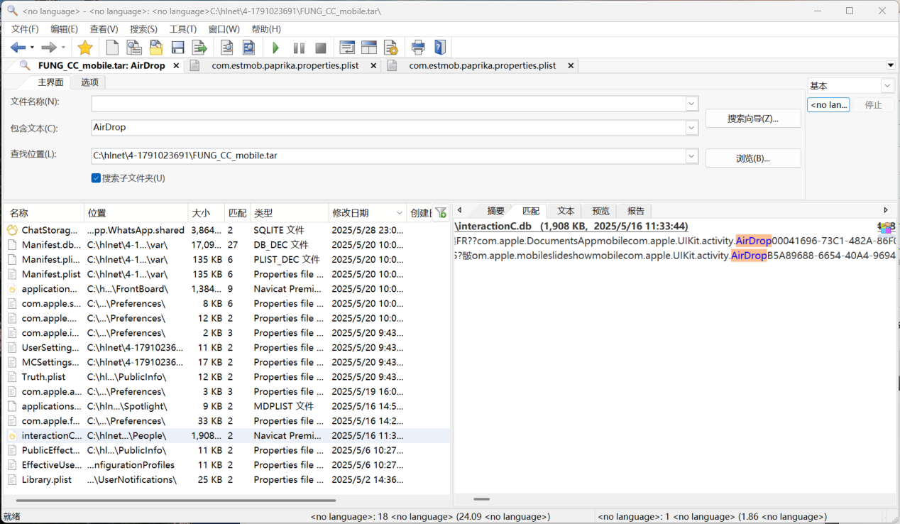
挨个查看后找到
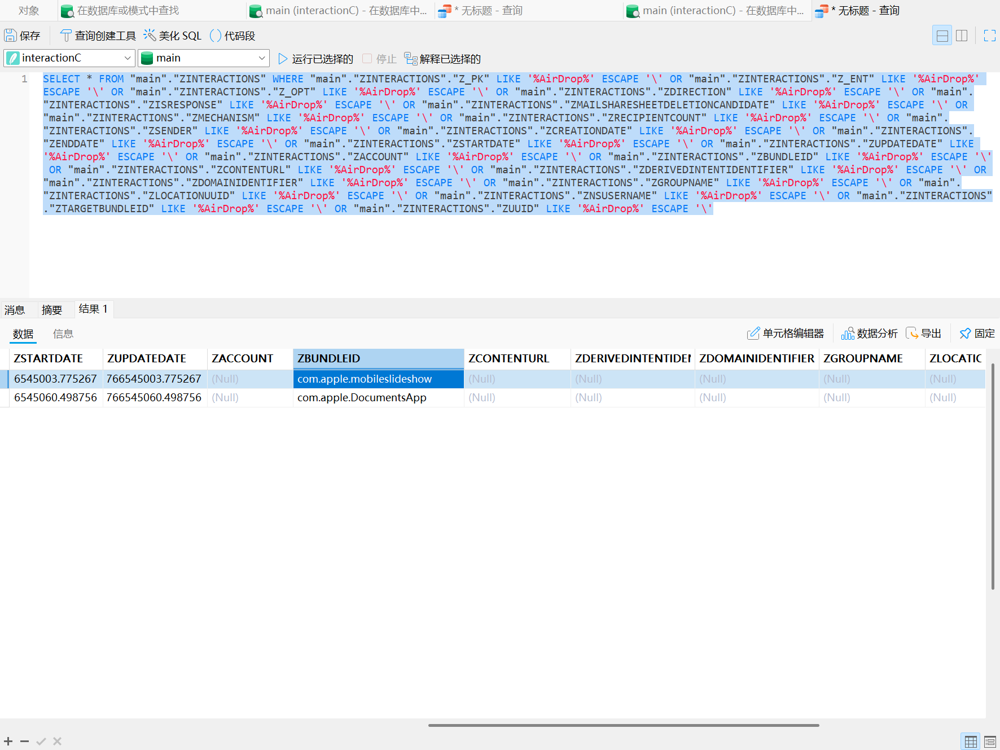
有点懵，问问ai这是什么
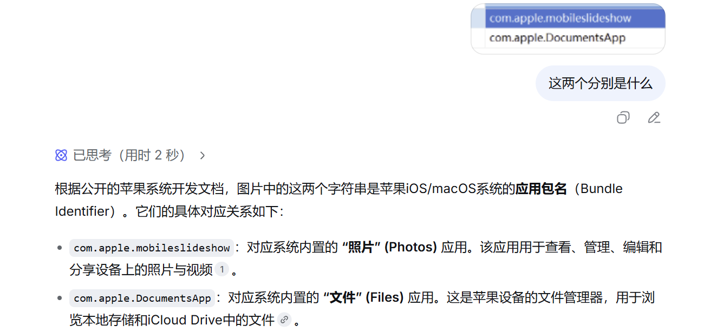
C
32. 【填空题】（2分） 原生APP「相片」中，有一个图片文件曾经通过空投"AirDrop"方式成功传送，请指出这个图片文件的文件全名 (请包含扩展名，依照参赛材料中的原文作答，注意区分大小写、空格及符号)
知识盲区，不知道怎么找了，看了看其它师傅的wp才找到
就在photos.sqlite数据库里面，之前做美亚题目的时候也考察过这个文件，没记住
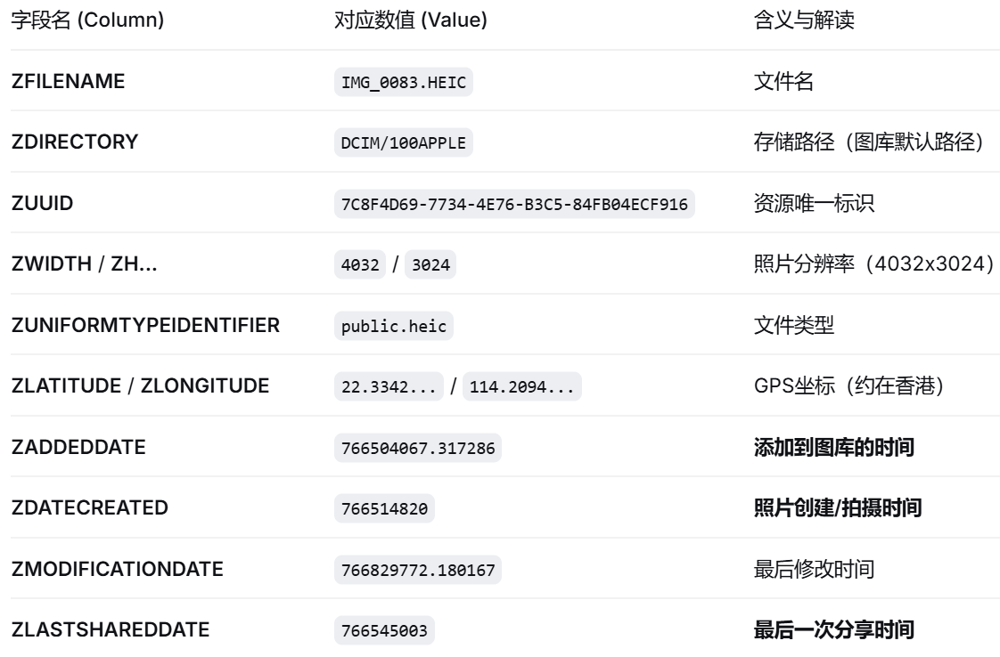
大致思路就是在ZASSET表找到ZLASTSHAREDDATE字段，看是否为空值
IMG_0083.HEIC
33. 【填空题】（2分） 承上题，请写出这个图片文件的开始传送的日期及时间？ (请以GMT +8时区及以下格式作答: yyyy-MM-dd HH:mm:ss)
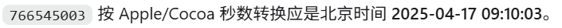
2025-04-17 09:10:03
34. 【填空题】（2分） 请指出哪一个多媒体文件同时储存在APP「文件」(套件识别码: com.apple.DocumentsApp)及APP「照片」(套件识别码: com.apple.mobileslideshow)中？ (请包含扩展名，依照参赛材料中的原文作答，注意区分大小写、空格及符号)
找一下之前的photos.sqlite数据库
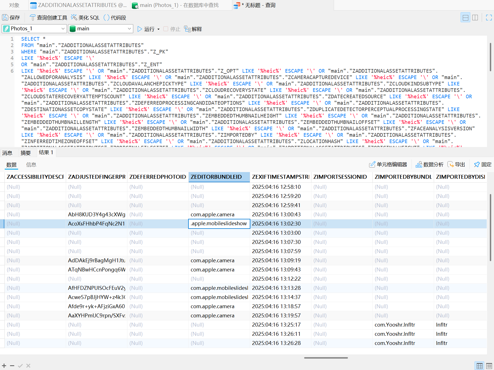
再看一下“文件”的路径
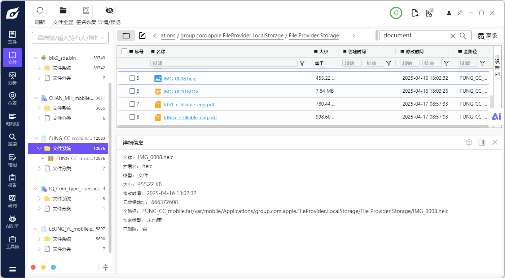
IMG_0008.heic/IMG_0010.MOV
35. 【填空题】（2分） 请指出在APP「照片」(套件识别码: com.apple.mobileslideshow)中的图片文件「IMG_0079.JPG」是由哪一个APP拍摄？ (请依照参赛材料中的原文作答，注意区分大小写、空格及符号)
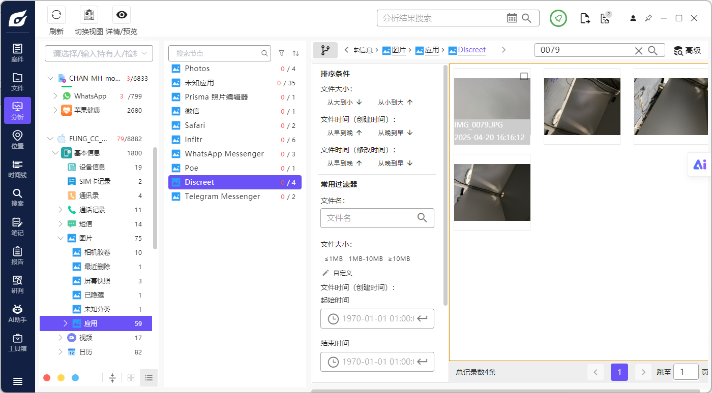
Discreet
36. 【填空题】（2分） 承上题，已知该图片文件是由上述APP所拍摄，并其后储存在APP「照片」(套件识别码: com.apple.mobileslideshow)成「IMG_0079.JPG」，请问该图片的原文件名称？ (请依照参赛材料中的原文作答，注意区分大小写、空格及符号)
看一下文件大小
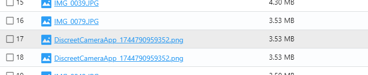
三个一样的，666
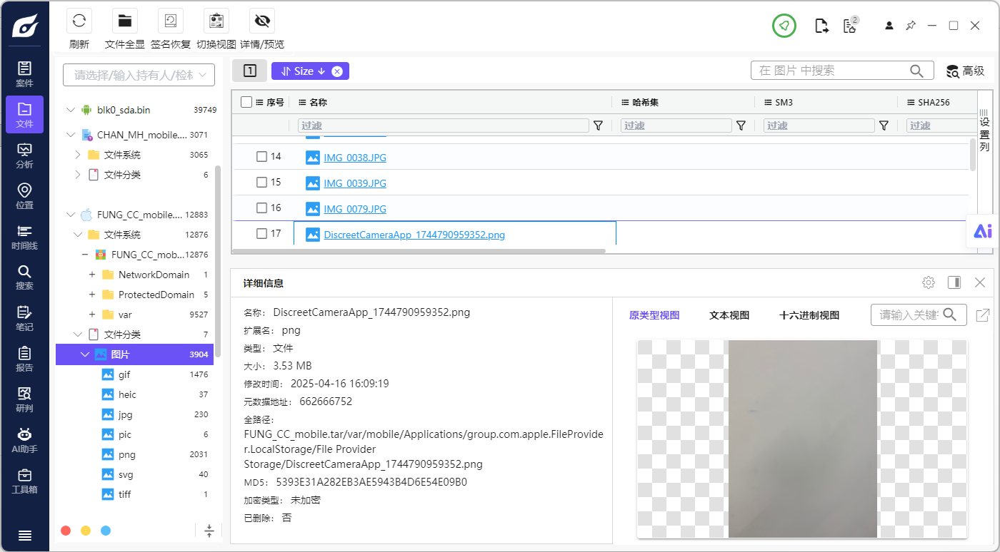
DiscreetCameraApp_1744790959352.png
37. 【填空题】（2分） 承上题，请指出原文件的建立时间？ (请以GMT +8时区及以下格式作答: yyyy-MM-dd HH:mm:ss)
修改时间应该就是创建时间吧，大概
2025-04-16 16:09:19
38. 【单选题】（2分） 请指出在APP「照片」(套件识别码: com.apple.mobileslideshow)中，储存多媒体文件「IMG_0014.MOV」与储存「IMG_0016.MOV」之间有没有其他多媒体文件储存到APP「照片」中？
- A. 有
- B. 没有
- C. 有拍摄，但没有储存
- D:无法确认
Z_PK连续，没有其他文件
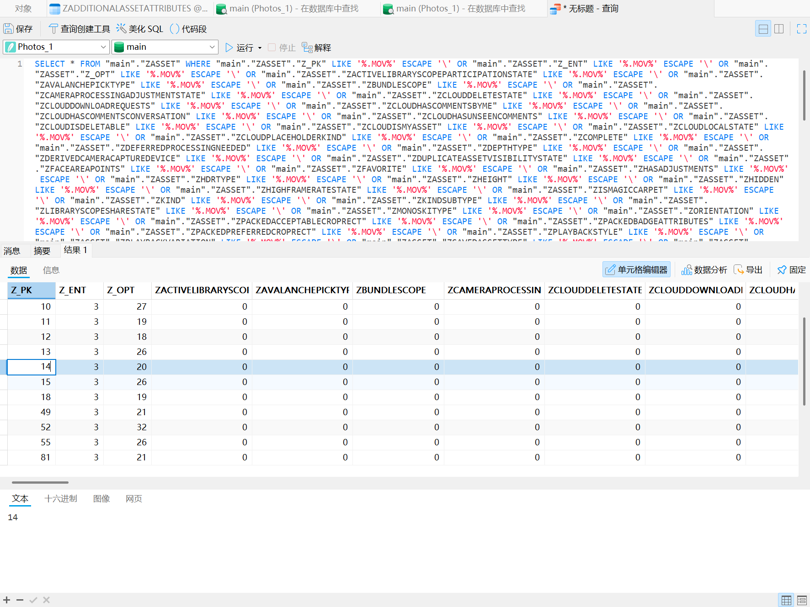
B
39. 【单选题】（2分） 承上题，以下哪个陈述是正确描述上一题的答案？
- A. 制作多媒体文件「IMG_0015.MOV」时，直接储存到隐藏相册中
- B. 制作作多媒体文件「IMG_0015.MOV」时，直接上传到iCloud
- C. 制作多媒体文件「IMG_0014.MOV」时用了缩时摄影
- D. 制作多媒体文件「IMG_0015.MOV」时名称被更改为「IMG_0016.MOV」
延时摄影
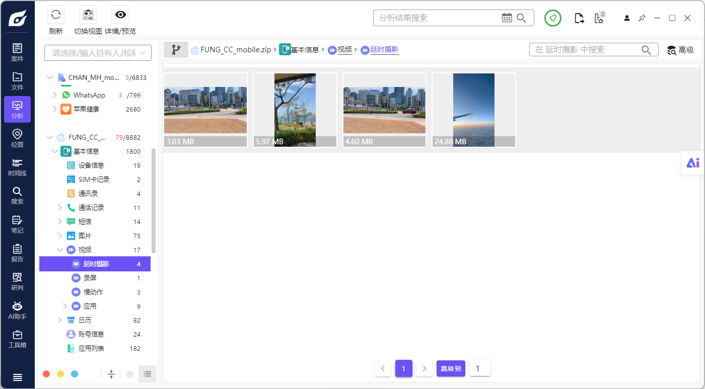
C
40. 【单选题】（2分） APP「照片」(套件识别码: com.apple.mobileslideshow)中，「IMG_0027.HEIC」的原地理位置信息(WGS84)是？
- A. (22.2816569, 114.1756115)
- B. (22.2826366666667, 114.168503333333)
- C. (22.2826216666667, 114.168525)
- D. (22.2826216666667, 114.168503333333)
好眼熟的题目
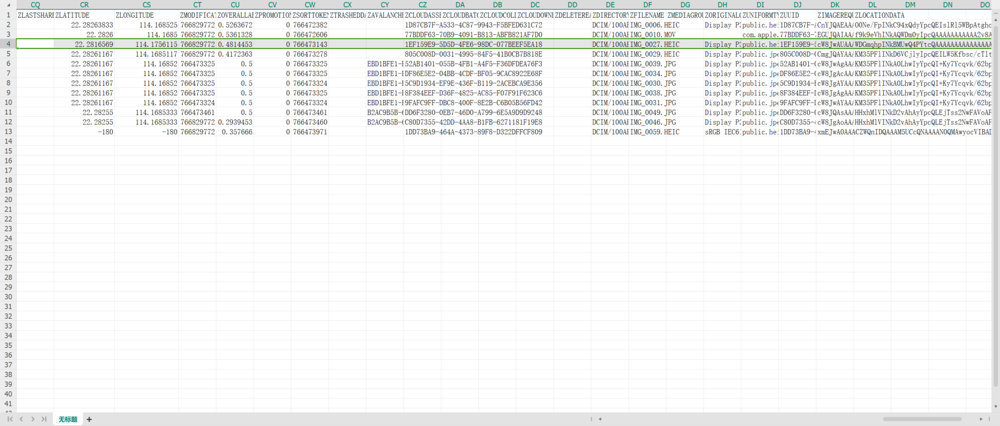
A
41. 【单选题】（1分） 曾经通过网络浏览器「Safari」下载了多少个图片文件？
- A. 1
- B. 2
- C. 3
- D. 4
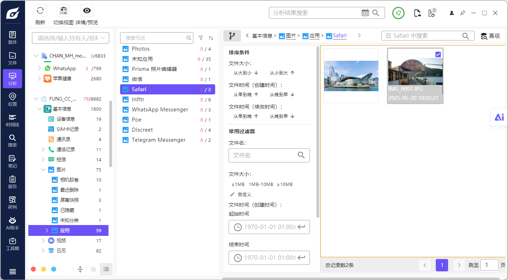
2
42. 【单选题】（2分） 多媒体文件「 IMG_0004.MOV」曾被修改后再储存成另一个文件，该文件名称是?
- A. IMG_0085.mov
- B. IMG_0086.mov
- C. IMG_0087.mov
- D. IMG_0088.mov
不会，看了其它师傅的wp才做出来
查询IMG_0004.MOV，得到它的Z_PK值，然后再检索这个值，得到答案
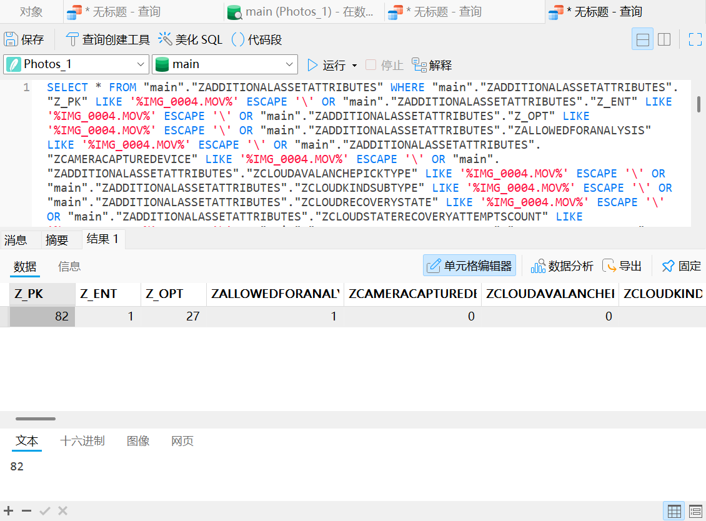
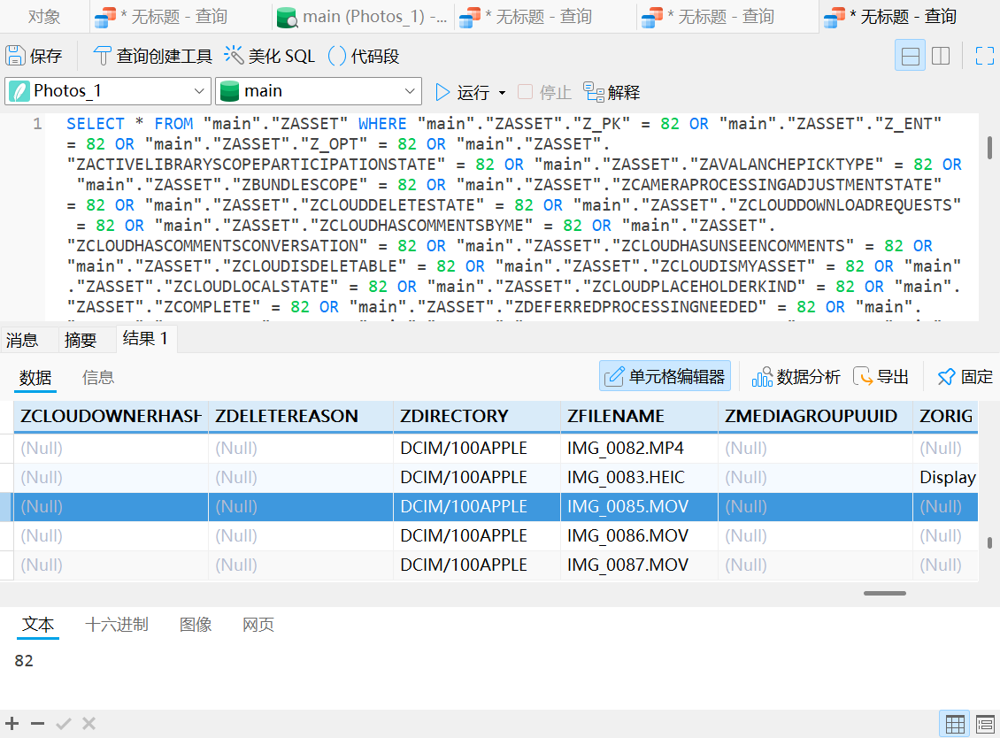
A
43. 【填空题】（2分） 曾经通过人工智能聊天APP "POE"查询一个问题，请列出这个问题的完整句子？ (请依照参赛材料中的原文作答，注意区分大小写、空格及符号)
先找到POE是什么东西
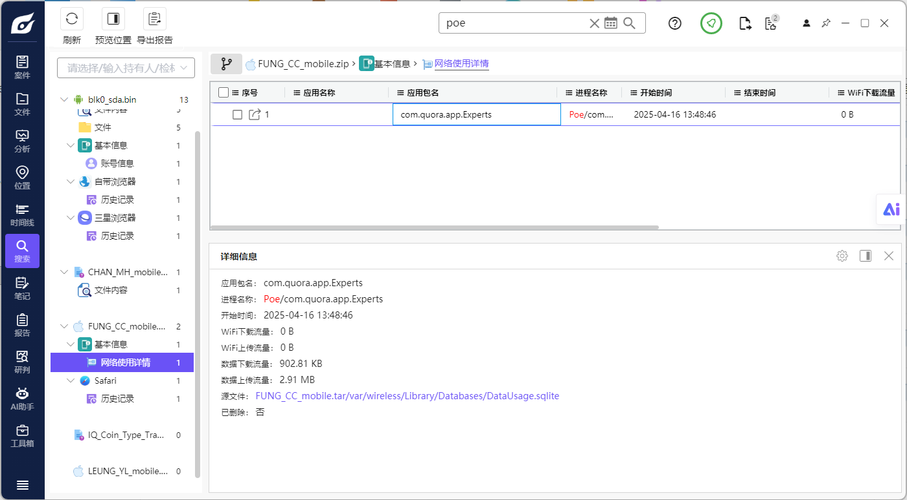
翻找文件可以看到一个数据库，查询得到
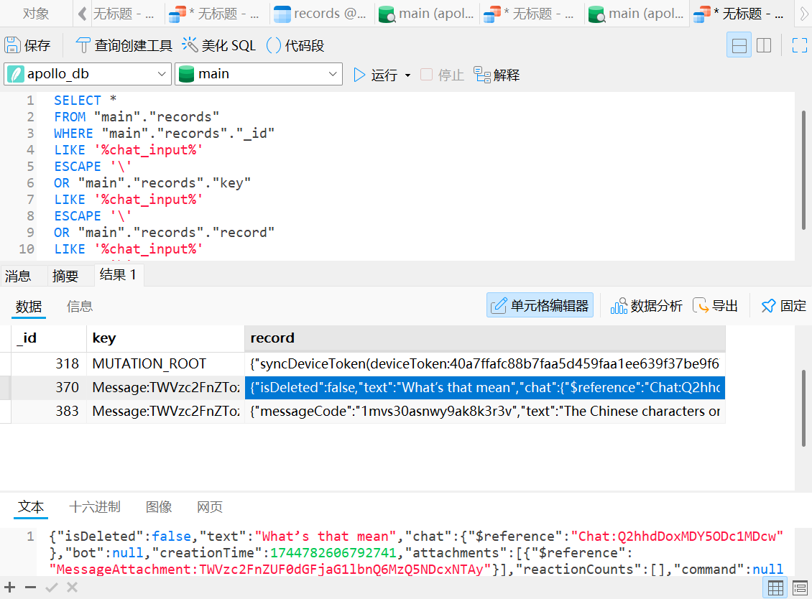
What’s that mean
44. 【填空题】（2分） 承上题，请指出提问的日期及时间 (答题格式: yyyy-MM-dd HH:mm:ss 作答, GMT+8)
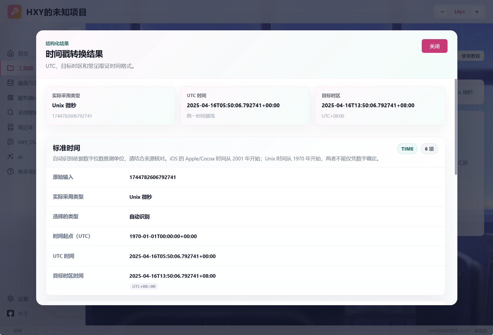
2025-04-16 05:50:06
45. 【填空题】（2分） 承上题，当时使用的是哪一个机器人? (请依照参赛材料中的原文作答，注意区分大小写、空格及符号)
打开数据全部，可以看到有个bot
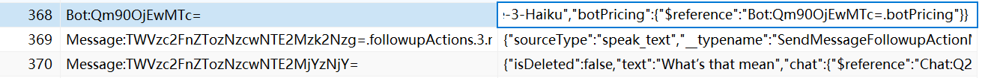
推断这是同一个对话的记录
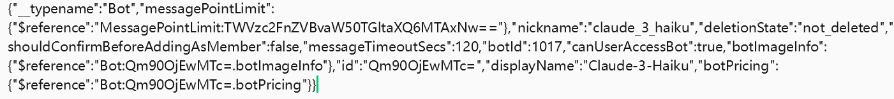
claude_3_haiku
46. 【填空题】（2分） 承上题，当时的使用者名称是？ (请依照参赛材料中的原文作答，注意区分大小写、空格及符号)
继续搜
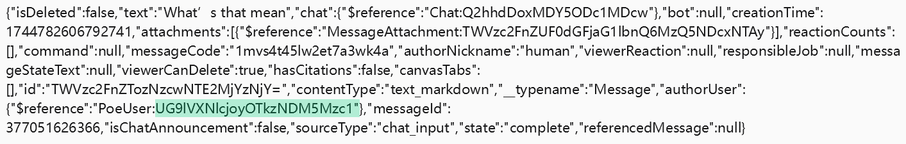
很明显这只是个学号一样的玩意，那就检索这个，得到答案
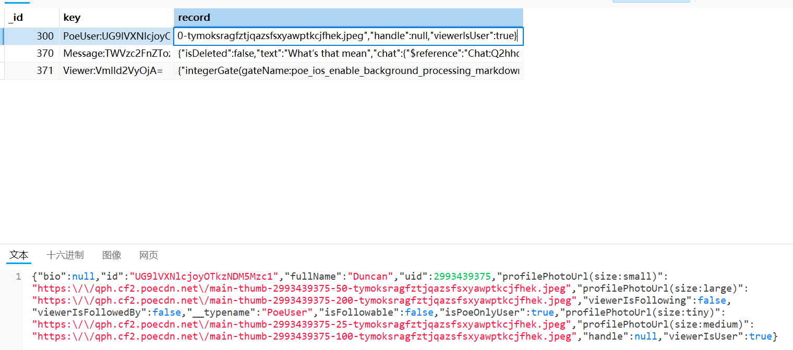
Duncan
47. 【填空题】（1分） 请指出即时通讯软件"WeChat"的 "WeChat ID" (请依照参赛材料中的原文作答，注意区分大小写、空格及符号)
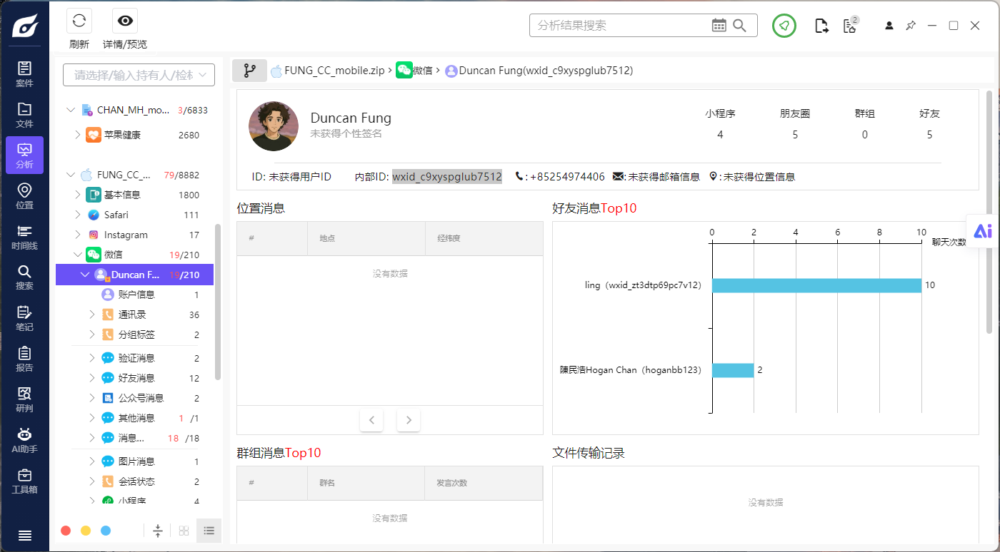
wxid_c9xyspglub7512
48. 【单选题】（1分） 承上题，这个"WeChat ID"关注了多少个「视频号」？
- A. 1
- B. 2
- C. 3
- D. 4
右键直接找到源文件进行阅读
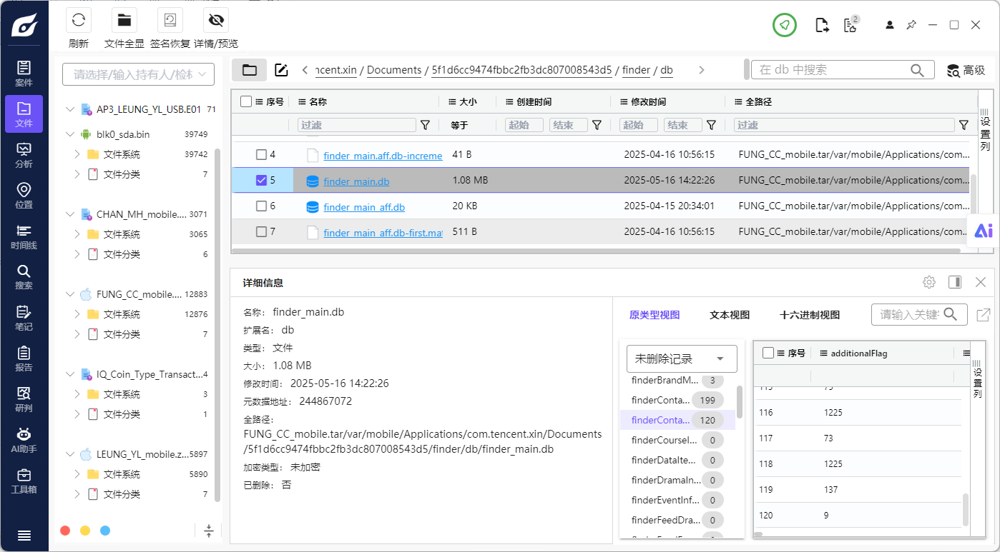
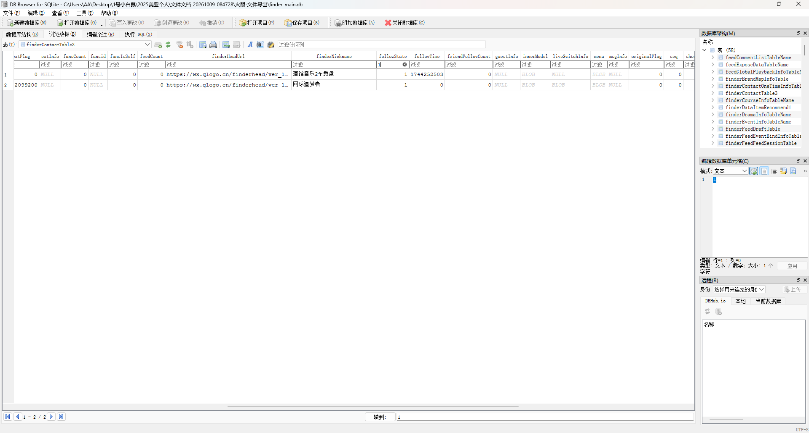
B
49. 【填空题】（1分） 请指出即时通讯软件WhatsApp的WhatsApp ID (请依照参赛材料中的原文作答，注意区分大小写、空格及符号)
85254974406@s.whatsapp.net
50. 【单选题】（1分） 即时通讯软件WhatsApp中，封存了下列哪个聊天群？
- A. 凤凰VIP会员心得交流群
- B. 币淘 群组1
- C. Sportsmen
- D. Titus Wong Manson Finance
md什么小众动词，搞半天就是隐藏
这是被封存的标识
A
51. 【填空题】（1分） 即时通讯软件WhatsApp中，总共追踪了多少个频道？ (请以阿拉伯数字作答)
19
52. 【单选题】（3分） 即时通讯软件「WhatsApp」中，下列哪个是群组 "Investors" 的管理员？ i) 85254974406@s.whatsapp.net ii) 85260927726@s.whatsapp.net iii) 85254961408@s.whatsapp.net
- A. 只有 i)
- B. 只有 i) 和 ii)
- C. 只有 ii) 和 iii)
- D. 以上皆是
群主也算管理员吗，行吧
B
53. 【填空题】（2分） 即时通讯软件「WhatsApp」中，群组 "Investors" 的群组ID？ (请依照参赛材料中的原文作答，注意区分大小写、空格及符号)
120363417204753192@g.us
54. 【填空题】（2分） 即时通讯软件「WhatsApp」中，「社群」名称是什么？ (请依照参赛材料中的原文作答，注意区分大小写、空格及符号)
We are 3
55. 【单选题】（2分） 承上题，请指出这个社群的群组图案的哈希值（SHA256格式）。
- A. B1A3706C574F81A3EE084FB9509997E06349E86D904D1DC10B879D1D5ED83125
- B. B8BA258402925E139CAFBBBBBC809EC160B70BB03DBD4D0F3063F58F69D0B956
- C. E43ADC646295BC5011577D4E733B6289D31A5E11ACB45285BE1FF530260DF383
- D. 20E64C78F9926548CEEFB1783991A4AD71A6631F3C86002254342E323A898C6A
真给我翻到了，还有两张，但是第一张的hash值不对，神了
问了问ai
A
56. 【填空题】（1分） 即时通讯软件「WhatsApp」中，找出WhatsApp ID:85254961408@s.whatsapp.net曾经是在而现在已经不在的群组，请指出该群组的名称。 (请依照参赛材料中的原文作答，注意区分大小写、空格及符号)
这个id是陈民浩
找到去看各个群聊，找到了，不知道要不要加上中括号的内容
Sportsmen[We are 3]
57. 【填空题】（1分） 即时通讯软件「WhatsApp」中，总共出现了多少个「投票」活动？ (请以阿拉伯数字作答)
有一个是新闻广告，去掉
15
58. 【填空题】（1分） 承上题，总共在多少个「投票」活动中作出了投票？ (请以阿拉伯数字作答)
这集神了，不知道多少人跟我一样一脸懵的（虽然已经有很多题目一脸懵了），又是观摩其它师傅wp的一集
现在火眼里找到投票，话说真的有人能把这个判断为投票吗
看到之后直接翻数据库，发现代号是280，找279的信息，发现type是46
navicat太臃肿了，换成db brower，以type=46过滤发现刚好是15个投票消息
发现ZISFROMME列，翻译过来就是“来自我”，推测这个是投票状态，1代表只有这个
1
59. 【单选题】（3分） 即时通讯软件「WhatsApp」中，根据群组「 IQ COIN 💰💰💰💰」对话内容正在策划，哪一种犯罪计划？
- A. 诈骗
- B. 抢劫
- C. 谋杀
- D. 以上都不对
A
60. 【填空题】（2分） 承上题，该群组建立者的WhatsApp ID是什么？ (请依照参赛材料中的原文作答，注意区分大小写、空格及符号)
85254974406@s.whatsapp.net
61. 【填空题】（2分） 承上题，该群组的建立时间是什么？ (请以GMT +8时区及以下格式作答: yyyy-MM-dd HH:mm:ss)
2025-04-25 16:57:55
62. 【单选题】（1分） 根据你嘅分析结果。三人因感情瓜葛内讧因而发生这次袭击事件。你怀疑梁燕玲曾到袭击现场，你将你的发现通知警察。 警察扩大现场搜索范围，终于在案发现场附近，发现陈民浩名下的小汽车，车上发现一部智能手机。请你以参赛材料LEUNG_YL_Mobile.zip回答以下问题 参考LEUNG_YL_Mobile.zip，该手机用作注册iCloud的email?
- A. lingleung1502@gmail.com
- B. lingleung1502@yahoo.com.hk
- C. lingleung1503@gmail.com
- D. lingl1502@gmail.com
A
63. 【单选题】（1分） 参考LEUNG_YL_Mobile.zip，文件IMG_0021.HEIC 所拍摄的相机型号是甚么?
- A. iPhone SE (3rd generation)
- B. iPhone SE (2nd generation)
- C. iPhone 12 mini
- D. iPhone XR
先找照片编号，21，再去检索筛选得到是iPhone SE (3rd generation) back camera 3.99mm f/1.8
A
64. 【填空题】（1分） 参考LEUNG_YL_Mobile.zip，文件IMG_0005.JPG所拍摄的座标(WGS 84) 是多少？ (请以纬度,经度的顺序及以下格式作答xx.xxxxxx,xx.xxxxxx)
数据库真是越做越熟练，现在看到题目都有肌肉记忆了，取证真的是经验比赛
22.337655，114.139441
65. 【单选题】（1分） 参考LEUNG_YL_Mobile.zip，文件IMG_0022.JPG是以下哪种方向拍摄?
- A. 不旋转
- B. 旋转180度
- C. 顺时针90度
- D. 逆时针90度
很明显没有旋转手机过
A
66. 【填空题】（1分） 文件IMG_0022.JPG的建立时间(GMT +08:00)是? (请以GMT +8时区及以下格式作答: yyyy-MM-dd HH:mm:ss)
找到创建时间，转换一下时间戳
突然发现火眼也能查看，甚至连镜头型号和相簿名称都有，有点多次一举了，还是火眼这种集成度高的工具好
2025-05-16 11:33:15
67. 【填空题】（2分） 参考LEUNG_YL_Mobile.zip，在WhatsApp 与”85254974406@s.whatsapp.net”聊天对话中，于2025-05-16 11:33:39时的信息所传送的座标(WGS 84)是多少? (请以纬度,经度顺序及以下格式作答xx.xxxxxxxxxxxx, xxx.xxxxxxxxxxxx)
发送了一个定位，在数据库里面找找
114.295440673828，22.2760486602783
68. 【填空题】（2分） 参考LEUNG_YL_Mobile.zip，在WhatsApp 与 "85254974406@s.whatsapp.net”聊天对话中，于2025-05-16 11:33:39时的信息所传送的座标(WGS 84)所指的餐厅英文名称是? (请依照参赛材料中的原文作答，注意区分大小写、空格及符号)
见上题
Fai Kee Seafood Restaurant
69. 【填空题】（3分） 参考LEUNG_YL_Mobile.zip，在WhatsApp 中聊天群组ID 120363401289578356里，于2025-04-29 08:31:02，机主传送了一个PDF 文件，该PDF的内容是什么？ (请依照参赛材料中的原文作答，注意区分大小写、空格及符号)
先找到聊天记录，右键在资源管理器里面打开就能找到pdf（以前都不知道）
打开发现是空白的，先调一下颜色，看到了地址
0xe36D4bCf0132B8Dc7317C2Fb9bfa1845629F6638
70. 【单选题】（1分） 参考LEUNG_YL_Mobile.zip，在WhatsApp 中聊天群组ID 120363401289578356里，有多少个参加者？
- A. 2
- B. 3
- C. 4
- D. 5
B
71. 【单选题】（1分） 参考LEUNG_YL_Mobile.zip，于2025-04-25 17:11:37 时使用WhatsApp 所拨打的手机号码是多少?
- A. 85254962307
- B. 85254961408
- C. 85254974406
- D. 85254993306
C
72. 【单选题】（1分） 参考LEUNG_YL_Mobile.zip，总共有多少个WhatsApp的通话记录? (包括拨打、接收及未接来电)
- A. 4
- B. 5
- C. 6
- D. 7
见上题
D
73. 【单选题】（1分） 参考LEUNG_YL_Mobile.zip，WhatsApp 聊天群组ID 120363400622997111 的群组名称是?
- A. Investors
- B. Foodies
- C. We are 3
- D. Happy Sharing within 3
D
74. 【单选题】（1分） 参考LEUNG_YL_Mobile.zip，WhatsApp 聊天群组Happy Sharing within 3 于2025-04-17 10:12:34 传送的WGS 84座标是多少?
- A. 22.323436345441, 113.276894376508
- B. 22.326923370361, 114.168403625488
- C. 21.239876452236, 115.925422314543
- D. 20.124955642236, 114.168403625488
找到名称，然后去数据库里面找
22.3269233703613，114.168403625488
B
75. 【单选题】（1分） 参考LEUNG_YL_Mobile.zip，Instagram 的版本是?
- A. 375.2.0.15.82 (722575504)
- B. 376.1.0.14.56 (722575504)
- C. 376.1.0.27.82 (722575504)
- D. 376.0.0.17.23 (722575504)
还是很好定位的，376.1.0.27.82
C
76. 【填空题】（1分） 参考LEUNG_YL_Mobile.zip，社交媒体软件Instagram 的安装时间? (请以GMT+8时区及格式YYYY-MM-DD hh:mm:ss作答)
2025-04-26 11:50:47
77. 【填空题】（2分） 跟据你的分析，警察在香港西贡蕉坑，找到一个行李箱，内藏一名女子尸体，身上没有任何身份证明文件，裤袋内搜获一个U盘，根据法医初步检验，死者头部及颈部有明显瘀伤，相信曾发生激烈争执，死因为气管受压导致窒息，死亡时间相信是在2025-05-16 0900时至1000时 。调查人员初步检查这个U盘，没有发现可疑资料，现在交由你进行电子数据鉴定工作。请参考参赛材料LEUNG_YL_USB.E01，答以下问题 参考LEUNG_YL_USB.E01，这个U盘里有多少个分区？ (请以阿拉伯数字作答)
25美亚个人赛u盘仿真跟着大佬学习u盘镜像
两个分区
2
78. 【填空题】（2分） 参考LEUNG_YL_USB.E01，这个U盘里的分区结构是什么？ (请以英文大写作答)
MBR
79. 【单选题】（2分） 参考LEUNG_YL_USB.E01，以下哪项描述是正确的？ i) U盘的总容量是16GB ii) 文件系统包括 FAT32、exFAT 和 NTFS iii) exFAT 分区的容量是 16GB iv) 分区标签名是 "SanDisk"
- A. 只有 i) 和 ii)
- B. 只有 i) 和 iii)
- C. 只有 ii) 和 iv)
- D. 以上皆非
错得都挺明显的
i:
ii:
iii:见上图
iv:
D
80. 【单选题】（3分） 参考LEUNG_YL_USB.E01，以下哪项描述是正确的？ i) 此U盘曾连接到一台名为 "PC" 的电脑 ii) U盘内存有一个已加密的压缩文件 iii) 已加密的压缩文件的创建日期系 2025-05-15
- A. 只有 ii)
- B. 只有 iii)
- C. 只有 ii) 和 iii)
- D. 以上皆是
i我找不到。。。
C
81. 【填空题】（3分）𠄘上题，该压缩文件的解压密码是多少？ (请依照参赛材料中的原文作答，注意区分大小写、空格及符号)
密码就是桌面壁纸
54d#e(nm
82. 【单选题】（3分） 参考LEUNG_YL_USB.E01，以下哪项描述是正确的？ i) 这是一个可引导U盘 ii) 有一个分区标签名为 "EFI" iii) 卷标日期为 2025-05-15 (UTC +8) iv) 有一个分区的总容量小于 500 MB
- A. 只有 i)
- B. 只有 i) 和 ii)
- C. 只有 i), iii) 和 iv)
- D. 以上皆是
i:可引导u盘是什么？
ii:
iii:
iv:
D
83. 【填空题】（2分） tammy.txt文件的内容是什么？ (请依照参赛材料中的原文作答，注意区分大小写、空格及符号)
due_diligence
84. 【填空题】（3分） 文件“xcontainer”的加密算法是什么？ (请依照参赛材料中的原文作答，注意区分大小写、空格及符号)
在火眼里面找到密钥（很明显）
不是文本的话就是文件密钥了，挂载成功，因为不知道怎么给VeraCrypt截图就没放图片了，反正在VeraCrypt软件上能看到
反正都解出来了，把容器里面的信息汇总一下，
二维码是0x548dafDe4B17d7d3C9485E79B3B5018801C7855E
txt是助记词：
jelly
pudding
vibrant
guitar
enable
creek
harmony
dragon
olive
sunset
rookie
fabric

AES(Twofish)
85. 【单选题】（3分） 分析文档 "xcontainer" 的属性。关于此磁盘镜像，以下哪项描述是正确的？ i) 大小为 4943872 字节 ii) 文件系统是 FAT iii) 没有嵌入式备份头 iv) 块大小为 128 位
- A. 只有 i) 和 ii)
- B. 只有 ii) 和 iv)
- C. 只有 ii), iii) 和 iv)
- D. 以上皆是
i:在VeraCrypt上面可以看到，错的
ii:
，对的
iii:在VeraCrypt上面可以看到，错的
iv:在VeraCrypt上面可以看到，对的
B
86. 【单选题】（3分） WinPE 启动后，系统会自动将核心映像挂载在哪个虚拟机？
- A. C:\
- B. D:\
- C. X:\
- D. Z:\
C
87. 【单选题】（3分） 下列哪些 Windows PE 指令在预设环境下无法执行？ i) Powershell ii). Eventvwr iii). Hostname iV). Diskpart
- A. 只有 i) 和 ii)
- B. 只有 iii) 和 iv)
- C. 只有 i), ii) 和 iii)
- D. 以上皆是
穷举就行了
C
88. 【单选题】（3分） 必须包含哪个文件，才能启动 Windows PE环境？
- A. WEPE64.wim
- B. install.wim
- C. WinPE.log
- D. hiberfil.sys
基础知识题目，不过我不知道:(
A
89. 【单选题】（3分） 若要判断一个U盘是否为可开机的Windows PE，以下哪些文件必须存在？ i) WEPE64.wim 或 boot.wim ii) bootmgr iii) EFI\Boot\bootx64.efi iv) hiberfil.sys
- A. 只有 ii 和 iv
- B. 只有 i), ii) 和 iii)
- C. 只有 i) 和 iv)
- D. 以上皆是
B
90. 【单选题】（3分） 这个 WinPE U盘的操作环境 (Operating Environment) 是基于哪一个 Windows 版本？
- A. Windows 7
- B. Windows 8.1
- C. Windows 10 PE
- D. Windows 11 PE
仿真后就能看出来
C
91. 【填空题】（3分） 根据你综合多项通讯软件的对话记录，浏览记录及资料分析，发现冯子超、陈民浩伙同女子梁燕玲共同做了一宗涉及加密货币投资的诈骗案件，因东窗事发打算携赃而逃。女子梁燕玲负责处理有关清洗黑钱事项，警察相信梁燕玲携带同相关材料逃跑，请你运用电子数据鉴定技巧寻找与加密货币相关的材料，尽快启动冻结程序。 参考LEUNG_YL_USB.E01，该U盘盘有一个加密的文件，该文件所用的加密软件名称是? (只需回答软件名称，不需要回答软件版本，(请依照参赛材料中的原文作答，注意区分大小写、空格及符号)
说的应该就是vc容器了
VeraCrypt
92. 【填空题】（3分） 参考LEUNG_YL_USB.E01，请列出与IQ Coin有关的虚拟钱包的地址 (请依照参赛材料中的原文作答，注意区分大小写、空格及符号)
0x548dafDe4B17d7d3C9485E79B3B5018801C7855E
93. 【填空题】（3分） 承上题，这个钱包属于哪一种加密货币 (请以英文大写作答)
刚好我的成都链安账号还没到期，顺路写了
BNB
94. 【填空题】（3分） 承上题，这个钱包总共有多少次存入记录？ (请以阿拉伯数字作答)
3
95. 【填空题】（3分） 承上题，存入款项的支账地址是什么？ (请依照参赛材料中的原文作答，注意区分大小写、空格及符号)
有一说一，就是这里开始有疑问了，发现和其他师傅不一样
我有两个存入记录，但是其它人只有一个。。。值对不上，时间也对不上
0x96DAA8de384c1d2bD09EA45589fA1cE05F3d2246
96. 【填空题】（3分） 承上题，这项交易传送了多少BEP-20 IQ Coin? (请以阿拉伯数字依照参赛材料中的原文作答，注意区分大小写、空格及符号和不用标点符号 )
1000000000
97. 【判断题】（3分） 助记词是由加密货币钱包生成的一系列单词，帮助用户恢复其私钥。助记词通常由12到24个单词组成
- A. 正确
- B. 错误
理论题了
A
98. 【填空题】（3分） 根据你的信息警察查知这个加密钱包涉及近期一宗巨额诈骗案，请你查出这个钱包余额额度，警察将会进行冻结程序 请指出包含有疑似助记词的文件的希哈值(MD5格式) (请以阿拉伯数字和英文大写作答)
就是这个txt
183B8E0C6365FEE834479269141A3F91
评论
可以直接用 GitHub 账号留言。